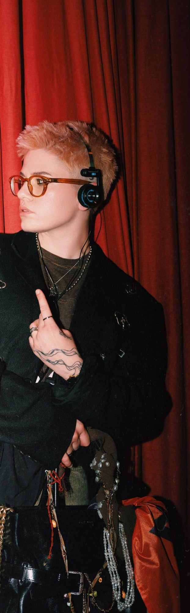
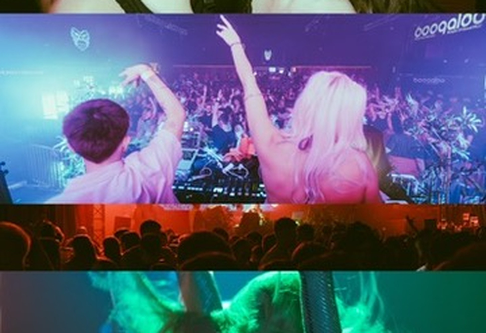
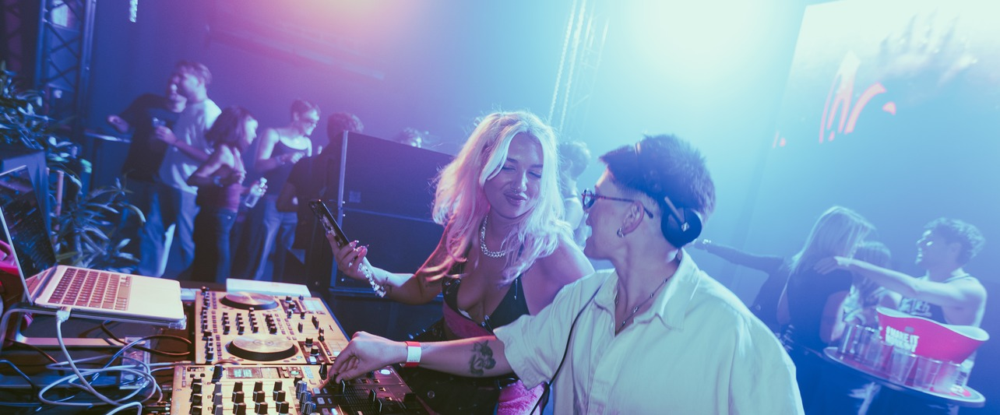

Monika Smiljanić · DJ · Event Producer
Founder of Swashtara · Zagreb, Croatia
ELLE HRVATSKAGLORIAMIXERVOX FEMINAE
DJ, event producer, and founder of Swashtara — Zagreb's most talked-about queer party.
For 8+ years I've been reading crowds, building atmospheres, and creating spaces where people feel completely free.
Whether it's a 4-hour poolside set on Hvar, an Elle Style Awards party, a wedding, or an underground club night — I bring the same thing every time: intention, energy, and a setlist that moves people.
Equally comfortable behind the booth and behind the scenes. One person. Complete package.

Resident DJ · 2022 – Present · Daily 3–4h sets, poolside & evening · International luxury resort crowd
Resident DJ · 3+ seasons · 3–4h daily sets · poolside & evening · international resort crowd
Official Resident DJ · Style Awards · brand events · editorial gatherings
Resident DJ · Upscale dining & social events · Zagreb
Summer Resident DJ · Full summer season · beachfront restaurant & bar · Kvarner coast
Resident DJ & Founder · Aquarius, Boogaloo, Katran, Klub.klub, Dva Osam & more


Set at one of Europe's largest and most prestigious music festivals.
Enterthegroove — opening set for the Toolroom Records founder.
Exclusive guest mix for one of Zagreb's key music platforms.
Co-founded boutique events brand for premium musical experiences.
Zagreb's defining queer event.
Built from zero — no budget, no team, no blueprint.
Today: one of Zagreb's most recognisable and beloved nights, covered in national press and attended by hundreds.
Venues include Aquarius Club, Boogaloo Club, Katran, Klub.klub, Dva Osam & more.
Also launched: Swashtara Matinee — a daytime queer social concept.
MON SAI plays for private and intimate events — dinners, celebrations, launches, and evenings that call for taste rather than volume.
As a DJ since 2018 and founder of the event brand Swashtara, Monika doesn't just show up to play music: she reads the room, the guests, and the pace of the evening, guiding them from the first aperitivo to the last dance.
Unobtrusive, refined sound that builds together with the evening.
From lounge atmosphere to the dance floor, without abrupt shifts.
Launches, pop-ups, openings. Sound that carries the brand's identity.
Cocktail hour, dinner, and after-party in one seamless arc.
The space, the guests, and the rhythm of the evening — before the first song.
A set that follows the evening and your wishes, not a fixed playlist.
A setup that fits the space and never disrupts the aesthetic.
Club nights · Weddings · Corporate events · Private parties
Festivals · Fashion events · Hotel & resort residencies